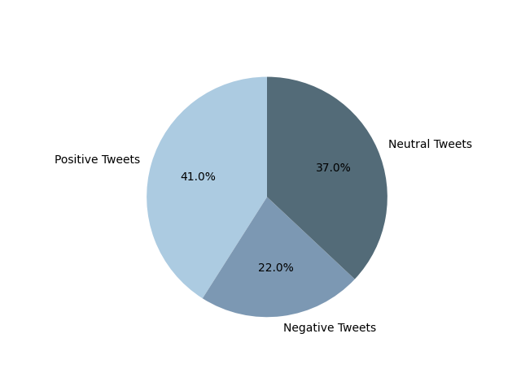

Positive Tweets
{% for id in positive_tweet_ids %}
{% if loop.index < 6 %}
{% endif %}
{% endfor %}
Negative tweets
{% for id in negative_tweet_ids %}
{% if loop.index < 6 %}
{% endif %}
{% endfor %}
Neutral tweets
{% for id in neutral_tweet_ids %}
{% if loop.index < 6 %}
{% endif %}
{% endfor %}